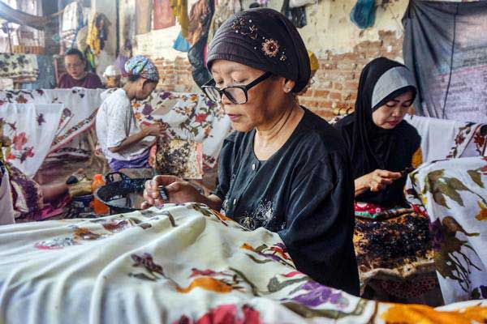
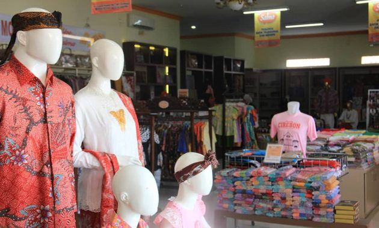

Apa itu Batik?

Batik adalah hasil karya bangsa Indonesia yang merupakan perpaduan antara seni dan teknologi oleh leluhur bangsa Indonesia. Batik Indonesia dapat berkembang hingga sampai pada suatu tingkatan yang tak ada bandingannya baik dalam desain/motif maupun prosesnya. Corak ragam batik yang mengandung penuh makna dan filosofi akan terus digali dari berbagai adat istiadat maupun budaya yang berkembang di Indonesia. Motif Batik menurut Kamus Besar Bahasa Indonesia, motif adalah corak atau pola. Motif adalah suatu corak yang di bentuk sedemikian rupa hinga menghasilkan suatu bentuk yang beraneka ragam.
Motif batik adalah corak atau pola yang menjadi kerangka gambar pada batik berupa perpaduan antara garis, bentuk dan isen menjadi satu kesatuan yang mewujudkan batik secara keseluruhan. Motif-motif batik itu antara lain adalah motif hewan, manusia, geometris, dan motif lain. Motif batik sering juga dipakai untuk menunjukkan status seseorang. Membatik merupakan tradisi turun-menurun. Karena itu, sering motif batik manjadi ciri khas dari batik yang diproduksi keluarga tertentu (Wikipedia, 2015).
Layanan Kami

Seragam Batik dengan Logo
- Baju Batik Logo Perusahaan
- Seragam Batik Logo Sekolah
- Seragam Batik Logo Komunitas
Seragam Batik Motif Custom
- Seragam Batik Kantor
- Seragam Batik Sekolah
- Batik Travel Umroh
- Batik Pramugari
Baju Batik Custom Satuan
- Batik Custom Sendiri
- Pilihan Siap Cetak
- Couple Batik Custom
- Kemeja Batik Custom
Jasa Pembuatan Batik Lainnya
Konveksi Baju Seragam Batik
Selain memproduksi kain batik, kami juga menerima jasa jahit batik baik untuk pria ataupun wanita. Anda tidak perlu repot-repot lagi mencari penjahit seragam batik ditempat lain
Produsen Kain Seragam Batik
Melayani produksi kain batik dengan menggunakan teknik batik cap, handprinting, dan tulis dalam skala besar untuk keperluan seragam kantor, sekolah, komunitas, dan lainnya.
Kain Seragam Batik Ready Stock
Kami juga menyediakan kain batik seragam ready stock untuk memenuhi kebutuhan akan baju batik dalam waktu yang cepat. Ada banyak pilihan motif dan juga jenis bahan kain.
Jasa Desain Motif Batik
Bagi anda yang memesan seragam dengan motif batik custom, kami siapkan desainer motif batik yang handal untuk membuat motif batik sesuai keinginan Anda.